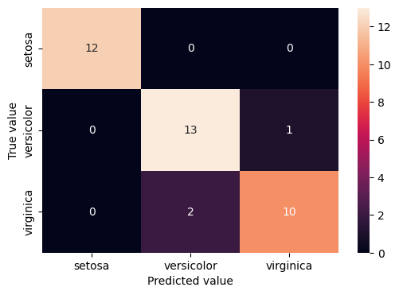

In this blog we will cover Iris flower classification using supervised machine learning algorithms namely Logistic regression and Random Forest. Iris data set is a popular data set and is useful for people who have started in their data science journey. Iris data set contains feastures of different flower species namely Sepal Length, Sepal Width, Petal Length and Petal Width and is used to classify flowers into 3 species namely Sentosa, Versicolor and Virginica.
Logistic Regression
Logistic regression is a supervised machine learning model and is used for classification tasks. Logistic regression is used to predict the probability of a binary outcome. For a binary classification task the goal of logistic regression is to find a hyper plane which best separates positive and negative points.
Random Forest
Random Forest is a supervised learning ensemble based technique which can be used for both classification and regression tasks. The base model of a random forest is a decision tree and a random forest is an ensemble of multiple decision trees. Random forest is a non linear model and works well for non linear relationships. It does a good job in handling outliers and missing values.
Iris Flower classification steps
We start with extracting the iris data set and converting it into a pandas data frame as shown below
from sklearn import datasetsimport pandas as pdimport numpy as npimport matplotlib.pyplot as pltimport seaborn as snsimport warningswarnings.simplefilter("ignore")iris = datasets.load_iris()# Converting Iris data into a pandas data frameiris_df = pd.DataFrame(data=iris.data, columns=iris.feature_names)iris_df['species'] = iris.targetprint("Different Target species of Iris dataset are ", iris.target_names)# Display dataframeiris_df
Different Target species of Iris dataset are ['setosa' 'versicolor' 'virginica']
We can see from above that our Iris data is a balanced data.
Next we spit the features and target variables and divide the data into training and test data as shown below.
# Splitting features and target variablesX= iris_df.iloc[:,0:4]y=iris_df.iloc[:,4]# Splitting the dataset into train and test datasetsfrom sklearn.model_selection import train_test_splitX_train,X_test,y_train,y_test=train_test_split(X,y,random_state=5)
Next we train a logistic regression model on our data as shown below.
# Let us now use supervised learning algorithms like Logistic regression for the classification task.from sklearn.linear_model import LogisticRegressionLR = LogisticRegression()# Fitting Logistic regression on the train dataLR.fit(X_train,y_train)#Predicting the output on test data using the trained Logistic regression modely_pred=LR.predict(X_test)
The heat map shows that Logistic regression is doing a good job in iris data classification.
Next we train a Random Forest model on our Iris data set as shown below.
# Let us now use non lineaar supervised learning algorithms like Random forest which is an ensemble model for the classification task.from sklearn.ensemble import RandomForestClassifierRF = RandomForestClassifier(random_state=5)# Fitting Random Forest on the train dataRF.fit(X_train,y_train)#Predicting the output on test data using the trained Random forest modely_pred=RF.predict(X_test)y_pred
Next we display the classification metrics for random forest which shows that logistic regression is performing better random forest for iris data classification.
The below code shows that the accuracy of random forest is less than that of logistic regression.
# Printing accuracyaccuracy=accuracy_score(y_test,y_pred)*100print("Accuracy of Random forest model is ", accuracy)
Accuracy of Random forest model is 92.10526315789474
Next we display the heat map of the confusion matrix of Random forest which shows that logistic regression performs better than Logistic regression for the Iris data set.
# Plotting heatmap of confusion matrix for Random Forestimport seaborn as snscm = confusion_matrix(y_test, y_pred) cm_df = pd.DataFrame(cm,index = ['setosa','versicolor','virginica'], columns = ['setosa','versicolor','virginica'])plt.figure(figsize=(6,4))sns.heatmap(cm_df, annot=True)plt.ylabel('True value')plt.xlabel('Predicted value')plt.show()

Fig 4- Heatmap of confusion matrix for Random forest
In this blog we learnt how to use machine learning models like logistic regression and random forest to classify an iris flower data set. It is to be noted that a complex model doesn’t necessary give better performance metrics when compared to a relatively simpler model as shown by the performance metrics of Logistic regression and Random forest on the Iris data set.
Python notebook code link in the Github repository
---title: "Iris Dataset Classification using Machine Learning"author: "Rahul Satoskar"date: "2023-12-02"categories: [Classification]image: "regression.png"---# IntroductionIn this blog we will cover Iris flower classification using supervised machine learning algorithms namely Logistic regression and Random Forest. Iris data set is a popular data set and is useful for people who have started in their data science journey. Iris data set contains feastures of different flower species namely Sepal Length, Sepal Width, Petal Length and Petal Width and is used to classify flowers into 3 species namely Sentosa, Versicolor and Virginica.# Logistic RegressionLogistic regression is a supervised machine learning model and is used for classification tasks. Logistic regression is used to predict the probability of a binary outcome. For a binary classification task the goal of logistic regression is to find a hyper plane which best separates positive and negative points.# Random ForestRandom Forest is a supervised learning ensemble based technique which can be used for both classification and regression tasks. The base model of a random forest is a decision tree and a random forest is an ensemble of multiple decision trees. Random forest is a non linear model and works well for non linear relationships. It does a good job in handling outliers and missing values.# Iris Flower classification stepsWe start with extracting the iris data set and converting it into a pandas data frame as shown below{{< embed iris_classification_final.ipynb#Iris echo=true >}}Next we check whether our data is balanced or imbalanced by plotting the class counts as shown below.{{< embed iris_classification_final.ipynb#class_counts echo=true >}}We can see from above that our Iris data is a balanced data.Next we spit the features and target variables and divide the data into training and test data as shown below.{{< embed iris_classification_final.ipynb#train_test_split echo=true >}}Next we train a logistic regression model on our data as shown below.{{< embed iris_classification_final.ipynb#logistic_regression echo=true >}}Next we display the classification report of logistic regression which proves that logistic regression performs well on the Iris data set.{{< embed iris_classification_final.ipynb#logistic_regression_metrics echo=true >}}Let us now see the accuracy of our logistic regression model.{{< embed iris_classification_final.ipynb#logistic_regression_accuracy echo=true >}}We now plot the heat map of the confusion matrix of logistic regression as shown below.{{< embed iris_classification_final.ipynb#logistic_regression_heatmap echo=true >}}The heat map shows that Logistic regression is doing a good job in iris data classification.Next we train a Random Forest model on our Iris data set as shown below.{{< embed iris_classification_final.ipynb#Random_Forest echo=true >}}Next we display the classification metrics for random forest which shows that logistic regression is performing better random forest for iris data classification.The below code shows that the accuracy of random forest is less than that of logistic regression.{{< embed iris_classification_final.ipynb#Random_forest_accuracy echo=true >}}Next we display the heat map of the confusion matrix of Random forest which shows that logistic regression performs better than Logistic regression for the Iris data set.{{< embed iris_classification_final.ipynb#Random_forest_heatmap echo=true >}}# ConclusionIn this blog we learnt how to use machine learning models like logistic regression and random forest to classify an iris flower data set. It is to be noted that a complex model doesn't necessary give better performance metrics when compared to a relatively simpler model as shown by the performance metrics of Logistic regression and Random forest on the Iris data set.# Python notebook code link in the Github repository<https://github.com/rahulsatoskar/CS-5805-Machine-Learning-Blogs/blob/main/Python%20notebooks/iris_classification_final.ipynb>